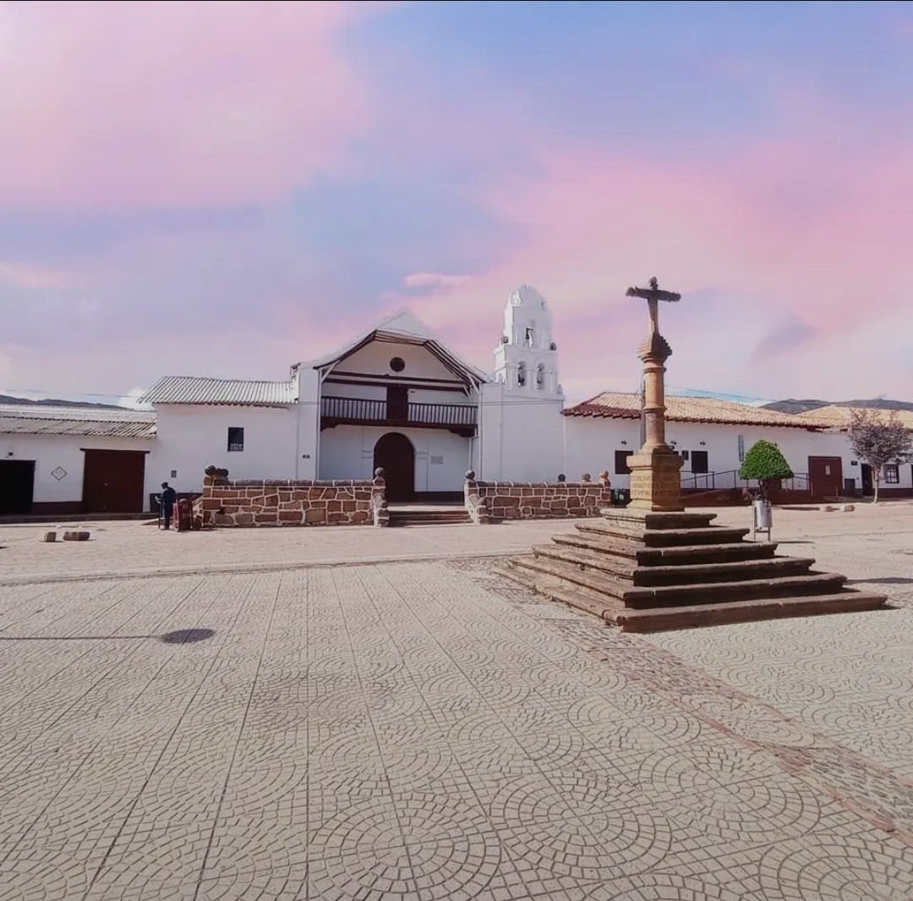
DESTINO TURÍSTICO
Descubre Sáchica
Historia, cultura, patrimonio, gastronomía y naturaleza se unen en uno de los destinos del Alto Ricaurte.
COMENZAR REVISTA
Historia, cultura, patrimonio, gastronomía y naturaleza se unen en uno de los destinos del Alto Ricaurte.
COMENZAR REVISTA
Bienvenido a esta revista turística dedicada a mostrar la historia, las tradiciones, los paisajes y los lugares que hacen de Sáchica un destino especial de Boyacá.
El propósito es ofrecer una guía atractiva y sencilla para habitantes y visitantes.
Encontrarás información sobre ubicación, historia, clima, atractivos turísticos, gastronomía, cultura, alojamiento, leyendas, juegos tradicionales y recomendaciones.
Selecciona una sección para conocer más sobre Sáchica.
Ubicación, historia, clima y territorio.
Lugares turísticos representativos.
Historias y curiosidades.
Caminatas y turismo rural.
Sabores tradicionales.
Fiestas, música y tradiciones.
Opciones de alojamiento.
Relatos de la tradición oral.
Recuerdos de los juegos tradicionales.
Recuerdos del trabajo campesino de Sáchica.
Opinión sobre la revista y el turismo de Sáchica.
Recuerdos musicales de Alirio Humberto Rubio Sierra.
Coplas tradicionales compartidas por María Teresa Ibáñez.
Tradiciones recreativas de antes.
Fotografías del municipio.
Descubre dónde se encuentra y algunas características importantes del municipio.
Sáchica se encuentra en Colombia, en el departamento de Boyacá y forma parte de la provincia de Ricaurte.
Colombia
Boyacá
Sáchica
Ricaurte
Destino turístico cercano de Boyacá.
Reconocido por artesanías y cerámica.
Municipio vecino del Alto Ricaurte.
Destino con tradición artesanal.
Capital del departamento de Boyacá.
Sáchica se caracteriza por sus paisajes secos y su vegetación particular.
Se recomienda llevar ropa cómoda, hidratación y protección solar.
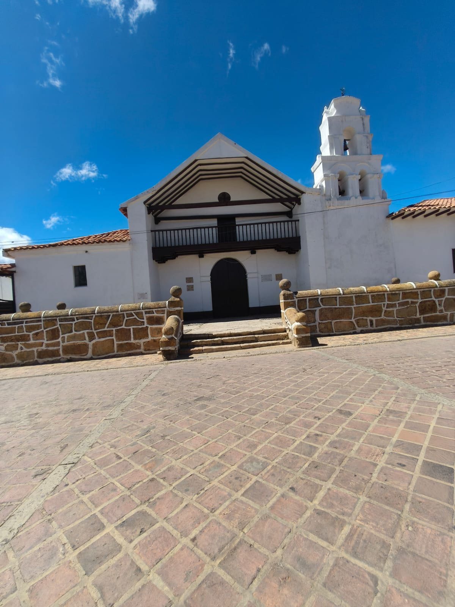
El territorio de Sáchica estuvo relacionado con comunidades indígenas muiscas.
Durante este periodo se desarrollaron diferentes construcciones religiosas.
El templo, la Cruz Atrial y las pinturas rupestres forman parte de su patrimonio.
Cada atractivo tiene una experiencia diferente.
Es una construcción religiosa de la época colonial que fue utilizada para enseñar la religión católica a los indígenas. Es uno de los lugares más representativos de la historia y la arquitectura de Sáchica.
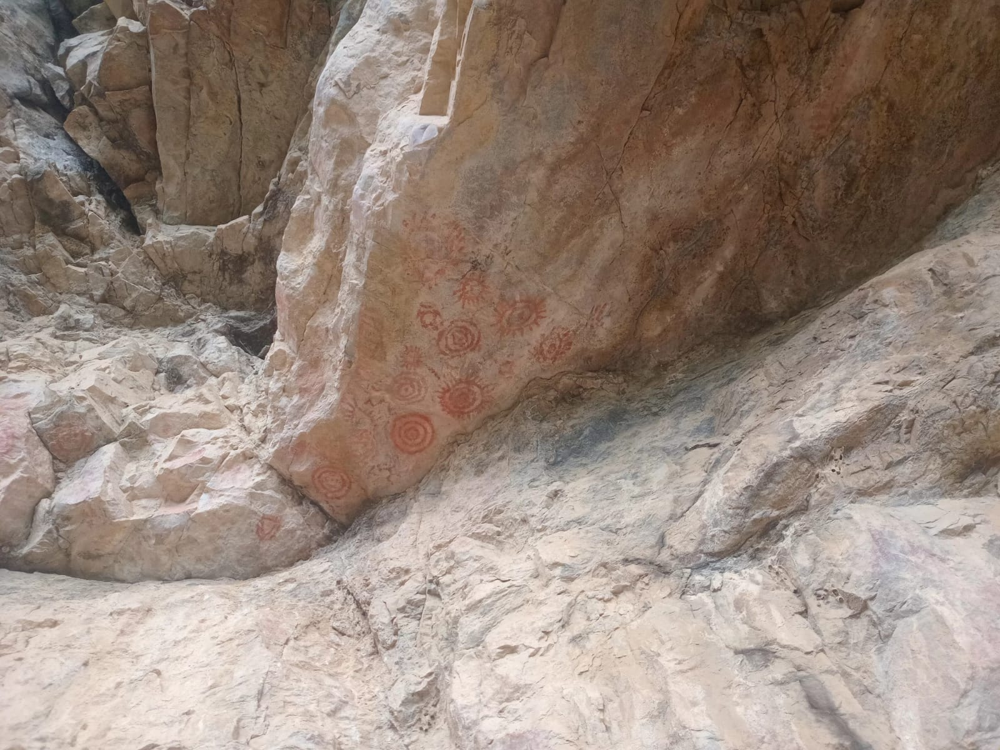
ARQUEOLOGÍASon dibujos antiguos realizados sobre las rocas por los pueblos indígenas que habitaron la región. Representan una muestra de sus costumbres, creencias y formas de expresión.
 HISTORIA
HISTORIA
Es una piedra relacionada con relatos de la época colonial sobre los castigos que se imponían antiguamente. Forma parte de la memoria histórica y las tradiciones que se cuentan en Sáchica.
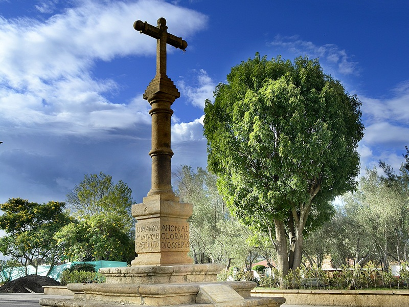
PATRIMONIOEs una cruz religiosa ubicada en el espacio exterior del templo. Durante la época colonial, estas cruces se utilizaban en actividades de evangelización y ceremonias religiosas al aire libre.
 RELIGIÓN
RELIGIÓN
Es un lugar elevado de importancia religiosa desde donde se puede observar parte del paisaje de Sáchica. También se relaciona con las tradiciones católicas y las actividades de reflexión y peregrinación.
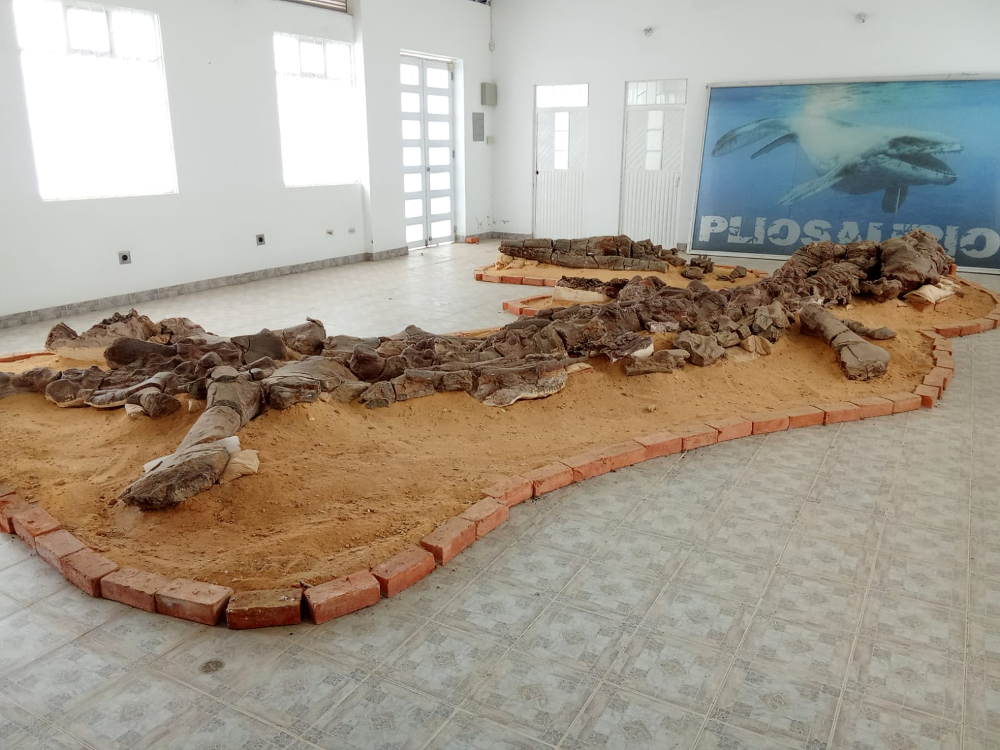
PREHISTORIAEl plesiosaurio fue un reptil marino prehistórico que vivió hace millones de años. Su presencia en las referencias paleontológicas de la región recuerda que el territorio que hoy conocemos como Boyacá estuvo cubierto por mares antiguos y conserva evidencias de esa historia natural.
Algunas curiosidades sobre Sáchica.
Los monumentos del Sol y la Luna ubicados en el parque principal de Sáchica fueron creados como homenaje a las divinidades de los pueblos indígenas que habitaron la región.
Las pinturas rupestres de Sáchica muestran rostros humanos, elementos de la naturaleza y símbolos antiguos.
La tradición cuenta que este monolito era utilizado para sujetar y castigar a indígenas acusados de ciertas faltas.
En Gondava hay reproducciones de animales prehistóricos a tamaño real.
La Cruz Atrial de Sáchica es monolítica, es decir, fue elaborada en una sola pieza de piedra.
Las aguas termales de Sáchica se caracterizan por tener presencia de hierro y otros minerales.
El templo tenía un coro para quienes permanecían dentro y un antecoro destinado a indígenas que permanecían fuera.
La agricultura forma parte de la identidad rural de Sáchica y la cebolla es uno de los productos más asociados con el municipio.
Recorre paisajes y senderos.
Disfruta recorridos rurales.
Conoce lugares históricos.
Captura paisajes y arquitectura.
Descubre espacios arqueológicos.
Disfruta el turismo rural.
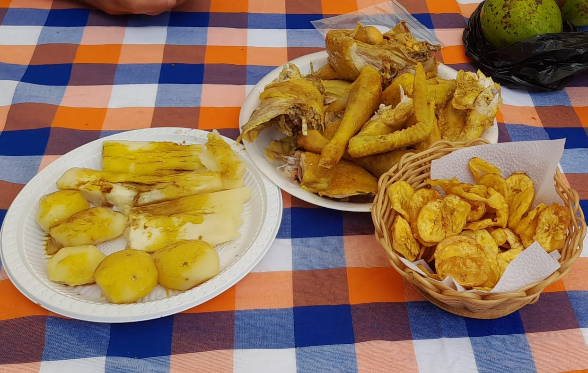
La gallina criolla de Sáchica es un plato tradicional de la gastronomía campesina, preparado con gallina criada en el campo. Se caracteriza por su sabor casero y su preparación en caldo, acompañada generalmente de papa, yuca, plátano y otros ingredientes de la región. Es una comida que representa las costumbres, los sabores y la tradición de las familias campesinas de Sáchica.

Es una preparación tradicional hecha con harina de maíz y cuajada o queso. Tiene un sabor ligeramente dulce y se cocina hasta quedar dorada por fuera. Es ideal para acompañar con chocolate caliente.

Es una sopa tradicional preparada con maíz y otros ingredientes, como papa, verduras y carnes, según la receta. Es un plato casero, nutritivo y muy representativo de la cocina campesina.

Es un plato típico que combina ingredientes de la región, como papa, cubios, hibias, chuguas, habas y diferentes carnes. Se caracteriza por ser abundante y representar las tradiciones agrícolas de Boyacá.
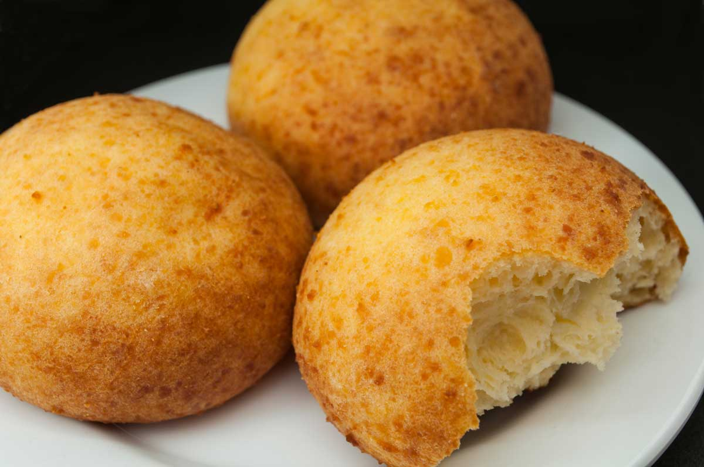
La almojábana es un amasijo tradicional de Boyacá, preparado principalmente con harina de maíz y cuajada o queso. Tiene una textura suave por dentro y una corteza ligeramente dorada. Es muy popular en los desayunos y las meriendas, acompañada de café o chocolate caliente.

En Sáchica es una de las tradiciones religiosas más importantes. Se realizan representaciones en vivo de la vida, pasión y muerte de Jesucristo, además de procesiones y actos religiosos que atraen a habitantes y visitantes.

La danza de la chicha en Sáchica representa las costumbres y tradiciones de la cultura campesina boyacense. A través de sus movimientos, música y vestuario tradicional, se recuerda la preparación de la chicha, una bebida ancestral elaborada principalmente con maíz. Esta danza destaca la unión de la comunidad y la importancia de conservar las tradiciones de nuestros antepasados.

La cebolla es uno de los productos agrícolas más representativos de Sáchica y forma parte de su identidad campesina. El municipio también ha sido reconocido por la producción de cebolla cabezona y por actividades relacionadas con este cultivo.
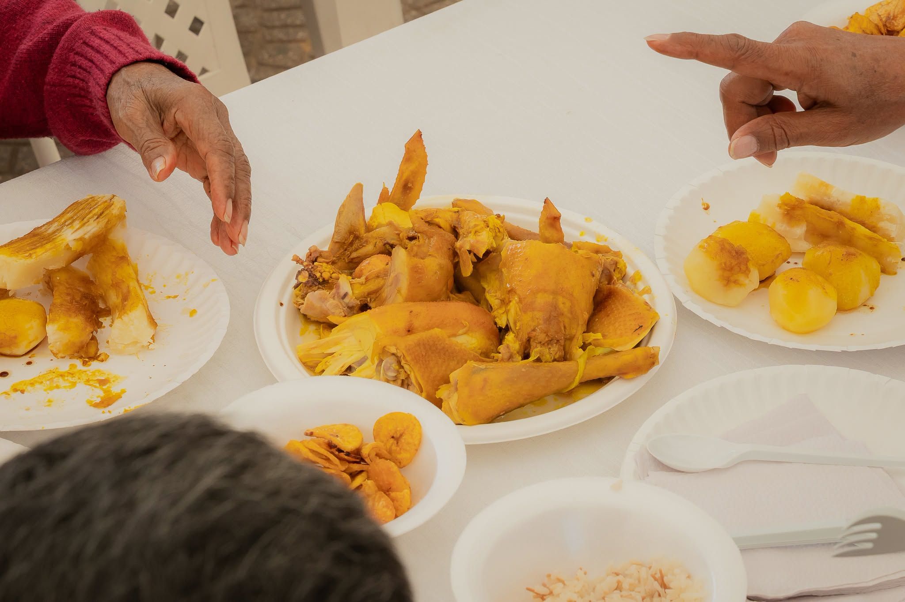
Es una actividad que resalta la gastronomía y las costumbres locales, especialmente platos preparados con gallina criolla. Sirve como espacio de encuentro para la comunidad y como forma de mostrar la cocina tradicional a los visitantes.

Es un género musical muy relacionado con la cultura campesina de Boyacá. En Sáchica representa las costumbres del campo y suele estar presente en celebraciones, encuentros culturales y actividades tradicionales.
La Fiesta de la Virgen del Carmen en Sáchica es una celebración religiosa que se realiza en el mes de julio en honor a la Virgen del Carmen. Esta festividad reúne a la comunidad en actividades religiosas, culturales y populares, fortaleciendo la fe, la unión familiar y las tradiciones del municipio.
Utiliza ropa apropiada para caminar y recorrer los lugares turísticos.
Lleva bloqueador, gorra o sombrero durante los recorridos.
Lleva agua especialmente durante caminatas.
No arrojes basura y ayuda a conservar los lugares naturales.
No rayes ni dañes monumentos, pinturas rupestres o lugares históricos.
Consulta horarios, clima y eventos antes de viajar.
 ALOJAMIENTO
ALOJAMIENTO
Opción de alojamiento para visitantes de Sáchica.
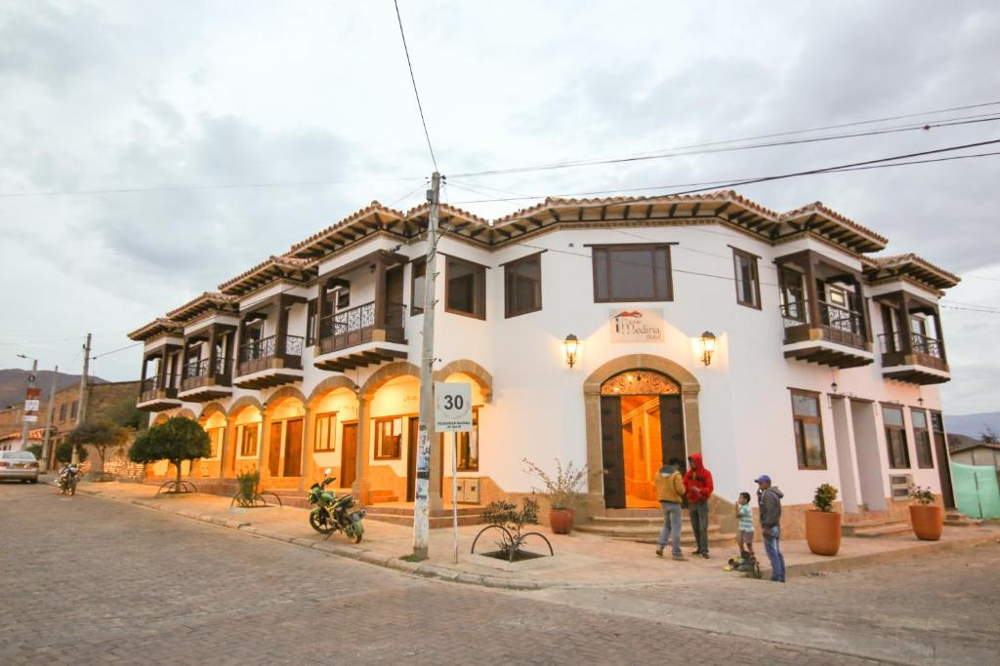
ALOJAMIENTOAlternativa de alojamiento dentro del municipio.
 ALOJAMIENTO
ALOJAMIENTO
Opción hotelera para disfrutar la visita.
 ALOJAMIENTO
ALOJAMIENTO
Otra alternativa de hospedaje para visitantes.
Relatos transmitidos de generación en generación.
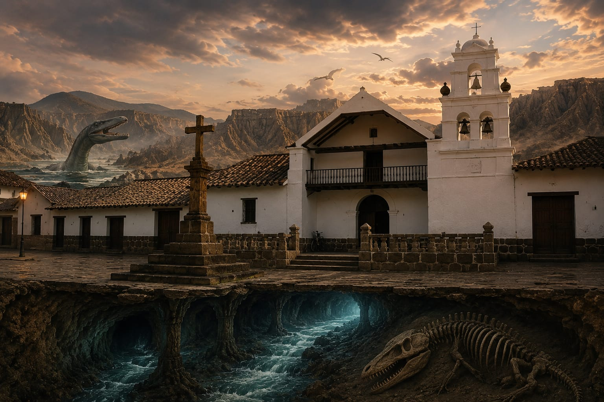
LEYENDA DE SÁCHICAHace muchos años, cuando Sáchica apenas comenzaba a crecer, los habitantes contaban que debajo del lugar donde hoy se encuentra la iglesia de San Lorenzo corría un inmenso río subterráneo. Decían que sus aguas eran tan fuertes que podían arrasar con todo el pueblo si algún día lograban salir a la superficie.
Para proteger a los habitantes, los primeros pobladores decidieron construir la iglesia sobre ese sitio. Creían que la bendición del templo mantendría el río tranquilo y evitaría una gran tragedia.
Con el paso de los años, la historia fue pasando de abuelos a padres y de padres a hijos. En las noches más silenciosas, algunas personas aseguraban escuchar el sonido del agua bajo el suelo de la iglesia. Otros decían que existían túneles secretos que conectaban con el río oculto.
La leyenda comenzó a decir que, si algún día la iglesia llegaba a derrumbarse, nada podría detener la fuerza del río. Sus aguas saldrían con tanta intensidad que inundarían las calles, las casas y toda la población de Sáchica.
Por eso, los habitantes siempre han cuidado con respeto la iglesia y mantienen viva esta historia como parte de su tradición. Aunque nadie ha podido demostrar que el río exista realmente, la leyenda sigue siendo contada a los visitantes.
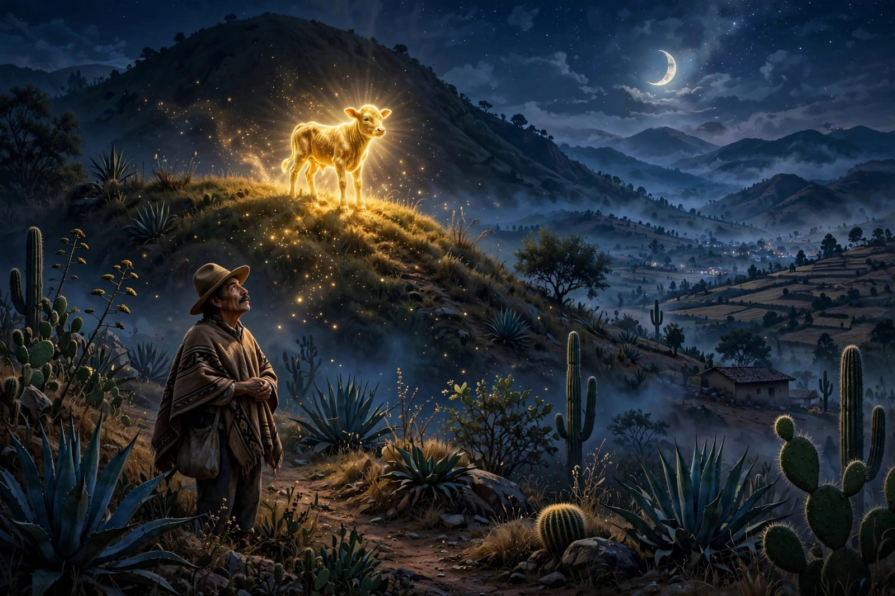
LEYENDA DE SÁCHICACuentan los antepasados que, en una finca de una vereda del municipio de Sáchica, existe un misterioso encanto que solo aparece en una fecha muy especial. La tradición dice que, cuando el Viernes Santo coincide con la luna menguante, y alguien se acerca al lugar cerca de las doce de la noche, comienza a verse una intensa luz brillante.
Quienes han presenciado este extraño fenómeno aseguran que, al acercarse, la luz se transforma poco a poco en un ternero completamente de oro. Muchos creen que este representa un tesoro oculto que permanece protegido por fuerzas misteriosas.
Sin embargo, la leyenda también advierte que nadie debe intentar llevarse el ternero. Los antiguos decían que, si alguien lograra sacar ese tesoro del lugar donde aparece, se produciría un gran derrumbe que cambiaría para siempre el paisaje de la vereda.
Recuerdos de la infancia y las formas de jugar de otras épocas en Sáchica, Boyacá.
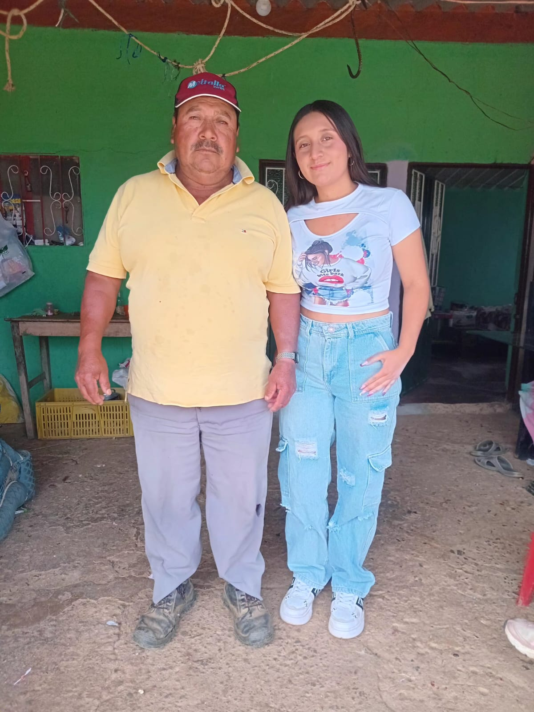
El domingo 4 de octubre de 2026 se realizó una entrevista al señor Plinio Monroy, en la vereda El Tintal, con el propósito de conocer sus recuerdos sobre los juegos tradicionales de su infancia y conservar parte de la memoria cultural de Sáchica.
Entrevista realizada por: Laura Heredia, para el proyecto Revista Turística.
El señor Plinio recordó juegos que hacían parte de la vida cotidiana de los niños.
Entre los juegos tradicionales de su infancia mencionó los mararayes, el trompo, las pinochas y los aros. También recordó que, más adelante, practicó el tejo y jugaba naipe.
Según sus recuerdos, los mararayes y el trompo se jugaban en junio; las pinochas, en julio; y los aros, en mayo.
En aquella época, estos juegos se practicaban principalmente para divertirse y compartir. Como explicó el entrevistado, no había concursos: se jugaba por gusto y entretenimiento.
Plinio contó que cortaban madera de cucharo y la dejaban madurar hasta que estuviera seca. Después le daban forma al trompo, alisaban la superficie y le sacaban punta.
Para hacer la punta utilizaban una puntilla: le quitaban la cabeza, la doblaban y la colocaban en el trompo. Como no era fácil conseguir estos juguetes, muchas veces cada niño tenía que fabricar el suyo. El entrevistado recuerda que esto ocurría hace aproximadamente 45 años, cuando él jugaba.
Según Plinio, los mararayes se traían de la zona de Santander, porque esa planta no se daba en Sáchica.
Los aros se hacían con una manguera y se empujaban con una horqueta de madera. Los niños corrían con ellos, incluso hasta la escuela, para avanzar más rápido.
El entrevistado también compartió que en 2016 ganó en tejo durante los Juegos Campesinos de Sáchica. Comentó que comenzó a jugar tejo desde los 15 años y que también disfrutaba mucho los juegos de naipe.
Los recuerdos de Plinio Monroy permiten conocer cómo se divertían los niños de antes, qué materiales utilizaban y cómo creaban sus propios juguetes. Estas historias ayudan a mantener vivas las costumbres y la memoria cultural de Sáchica.
Agradecemos al señor Plinio Monroy por compartir sus experiencias y conocimientos sobre los juegos tradicionales de su infancia.
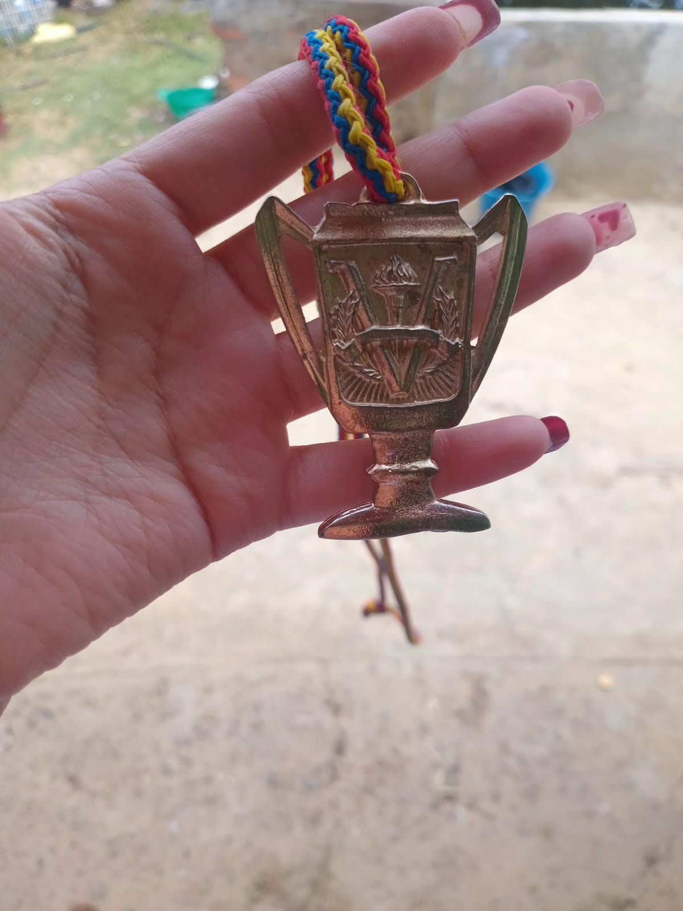
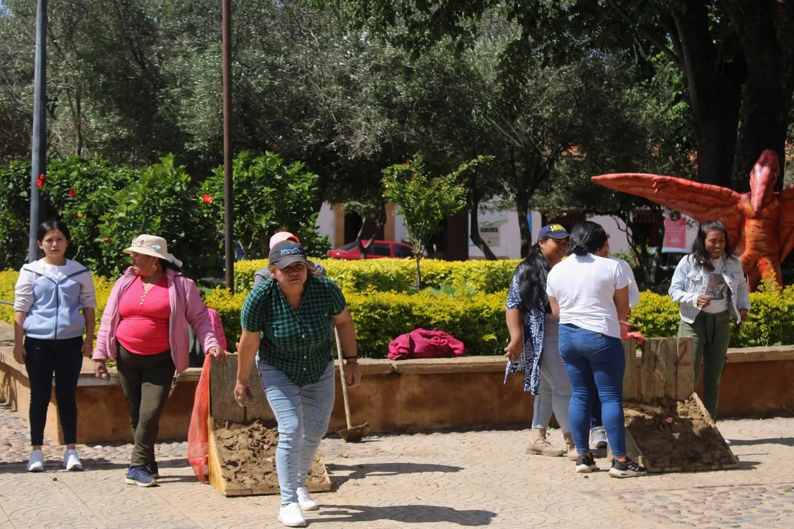
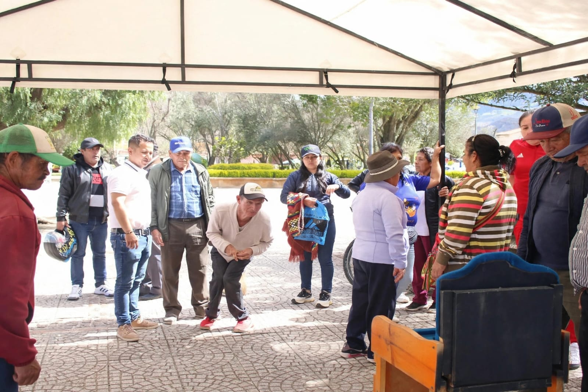
Algunos de los juegos tradicionales del municipio de sáchica
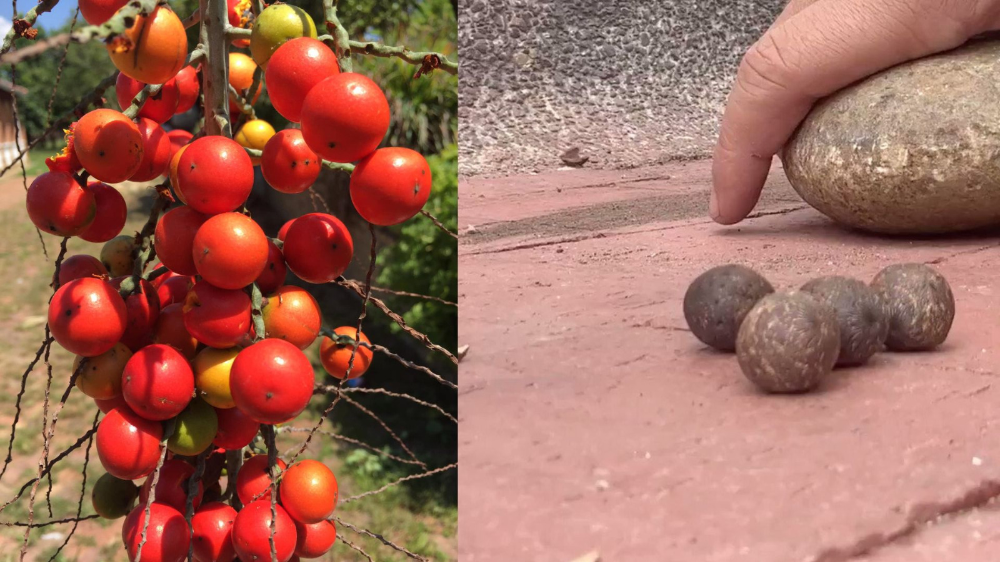
: Era un juego tradicional que se practicaba especialmente entre los niños. Se utilizaban semillas conocidas como mararayes y servía principalmente como una forma de diversión y encuentro entre amigos.
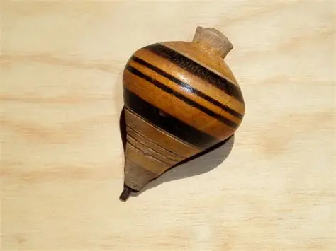
Consistía en hacer girar un trompo utilizando una cuerda. Antes muchos niños fabricaban sus propios trompos con madera y les colocaban una puntilla en la parte inferior para que pudieran girar.
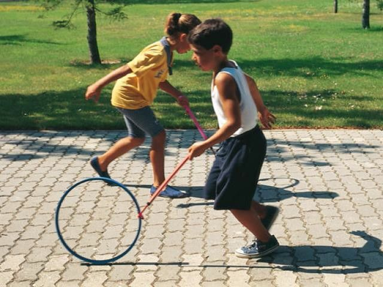
Se jugaba haciendo rodar un aro por el camino mientras se empujaba con una horqueta o un palo. Algunas personas fabricaban los aros utilizando mangueras y competían para ver quién podía avanzar más rápido.
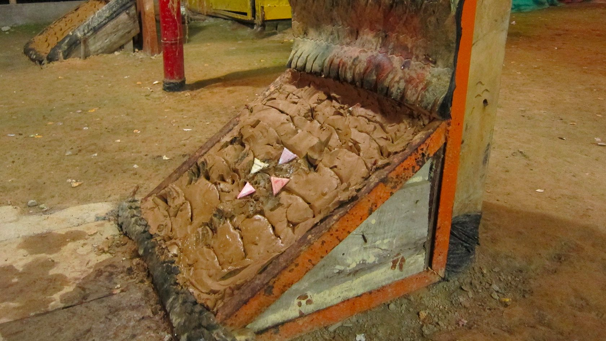
Es un juego tradicional colombiano de puntería. Los participantes lanzan un disco metálico llamado tejo hacia una cancha con el objetivo de acercarse al centro y conseguir puntos.
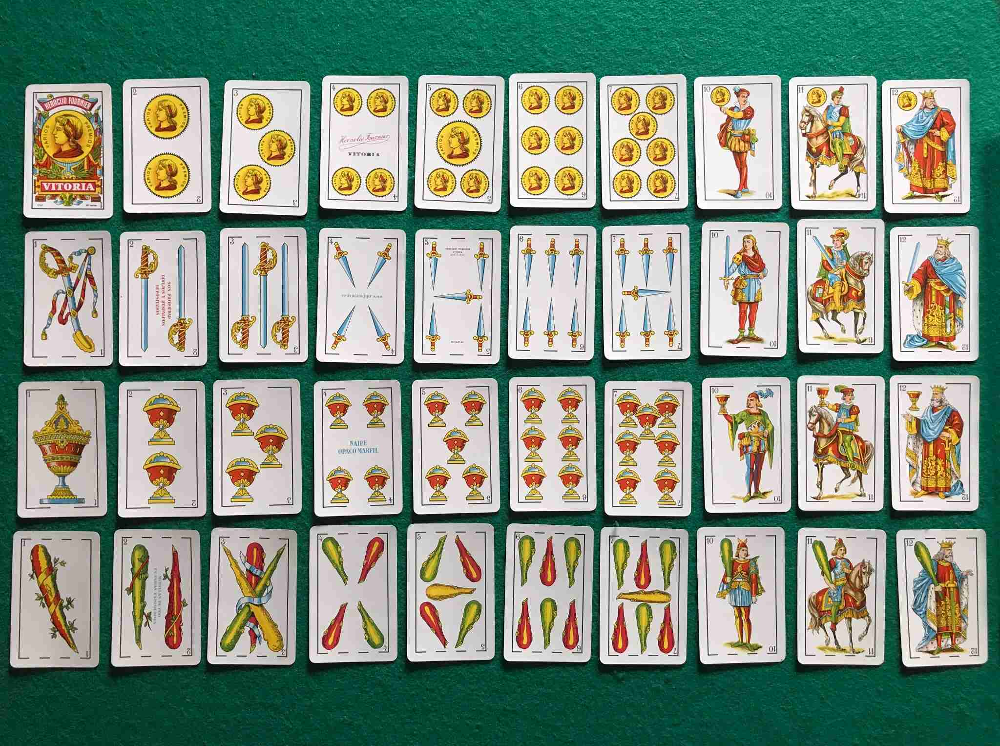
Es un juego realizado con cartas. Existen diferentes formas de jugarlo y era una actividad utilizada para compartir y pasar el tiempo entre familiares, amigos y vecinos.
Recuerdos sobre los cultivos, las herramientas, las lluvias y el trabajo campesino de otras épocas.
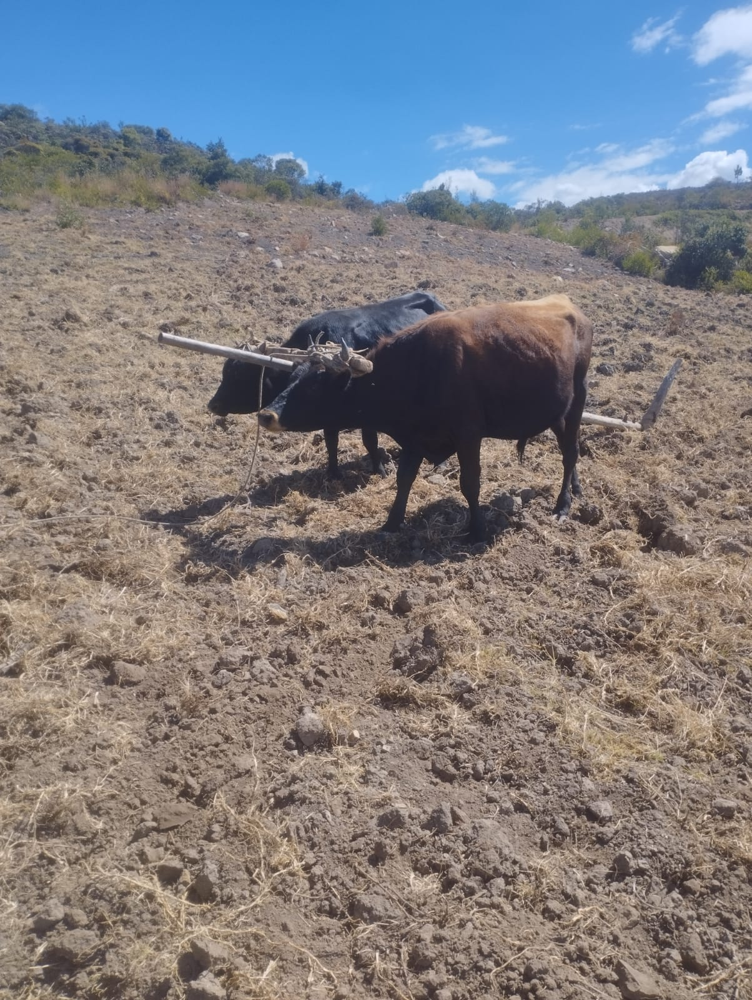
Esta entrevista recoge recuerdos sobre la forma en que antiguamente se trabajaba la agricultura en Sáchica, los cultivos que se sembraban, las herramientas utilizadas, el transporte de los productos y las dificultades que enfrentaban los agricultores.
Ella recuerda que los cultivos que más se sembraban eran maíz, cebada, trigo y arveja, productos que hacían parte importante de la agricultura de Sáchica.
Cuenta que antiguamente utilizaban bueyes para realizar las labores del campo y preparar la tierra.
El trabajo se realizaba principalmente de manera manual y con ayuda del arado, utilizando herramientas tradicionales y la fuerza de los animales para trabajar la tierra.
Los meses de marzo y abril eran ideales para sembrar, porque durante ese período llovía con mayor frecuencia. Por esta razón, no necesitaban sistemas de riego, ya que dependían principalmente del agua de lluvia.
Los productos se transportaban mediante largos recorridos a pie, utilizando burros o llevándolos directamente al hombro.
Antiguamente no se utilizaban tantos fungicidas, por lo que los cultivos no sufrían tantos daños. Actualmente se utilizan más fungicidas y, según su experiencia, los productos pueden dañarse con mayor rapidez.
Ella recuerda que una de las principales dificultades de antes era que, para transportar los cultivos, debían realizar trayectos muy largos, generalmente caminando o utilizando animales de carga.
Estos recuerdos permiten conocer cómo era el trabajo agrícola de generaciones anteriores y la importancia que tenían la lluvia, los animales, el arado y el trabajo manual en la vida campesina.
Una mirada a la importancia del turismo, la promoción del municipio y la creación de una revista turística para Sáchica.
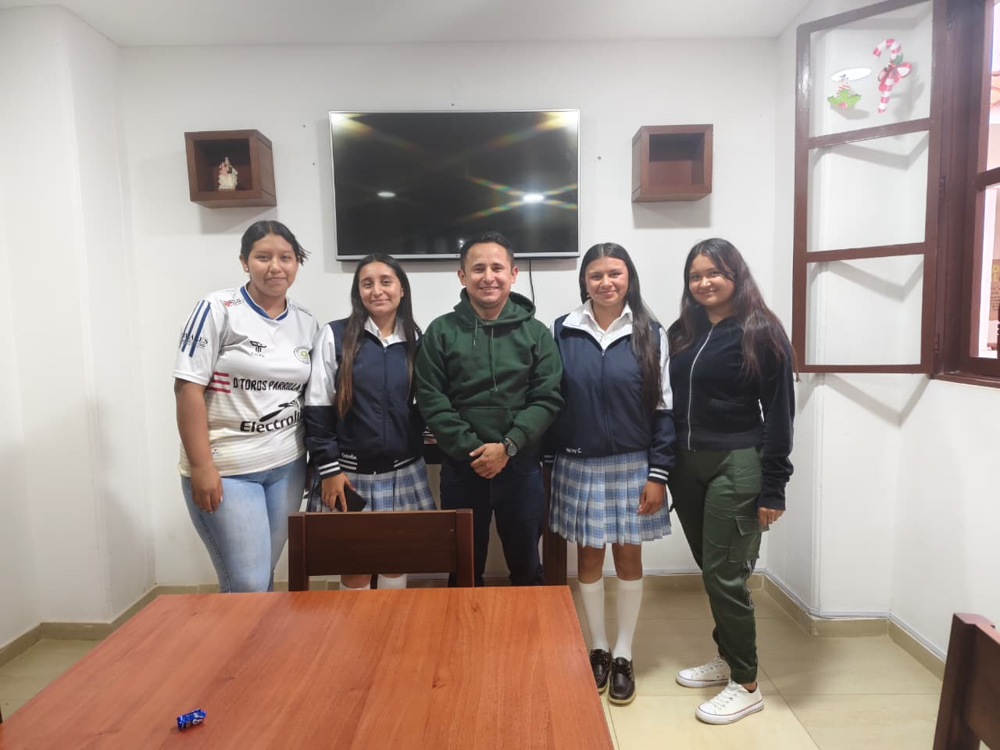
Esta entrevista recoge la opinión del alcalde de Sáchica sobre la creación de una revista turística, la importancia del turismo para el municipio, los lugares que recomienda visitar y las posibilidades de apoyo de la administración municipal a este tipo de iniciativas.
Me parece interesante, ya que en el municipio no existe una revista de este tipo y la idea es que las personas conozcan muchísimo más nuestro municipio, que cada día despierta más interés a nivel turístico.
Pienso que puede ser por el tema del presupuesto y por falta de conocimiento de algunos lugares. También es importante tener en cuenta las redes sociales, porque actualmente permiten que la información tenga un acceso más fácil y una mayor divulgación.
Sí, claro. Una revista puede ser una herramienta importante para reunir y compartir información sobre el municipio y sus atractivos.
Tendríamos más acceso a toda la información turística de nuestro municipio. Hay muchas personas que no conocen toda la capacidad turística que tiene Sáchica, y es importante que tanto los habitantes como los visitantes puedan conocer y visitar estos lugares.
Sí, claro. Es importante porque varios de los sitios con los que cuenta Sáchica están relacionados con el municipio y la administración municipal está a cargo de algunos de ellos. Por eso sería de gran importancia vincular al municipio con esta revista.
Me gusta mucho visitar las aguas termales que hay en nuestro municipio. También existen otros lugares importantes, como las pinturas rupestres y el fósil Sachicasaurus vitae.
El turismo ha venido creciendo en Sáchica. La cercanía con Villa de Leyva, que tiene un potencial turístico muy grande, ha ayudado a despertar el interés de los visitantes. Además, el municipio cuenta con capacidad hotelera, buena gastronomía y cada día hay más personas interesadas en invertir en Sáchica.
Para apoyar una revista se tendría que revisar cómo se va a desarrollar, cuál será su alcance y qué costos tendría. A partir de esto se podría analizar qué apoyo se puede brindar para ayudar a potenciar el municipio a nivel turístico.
La entrevista permite conocer una visión institucional sobre el crecimiento turístico de Sáchica y sobre la utilidad que puede tener una revista para divulgar sus atractivos, proyectos, servicios y tradiciones a habitantes y visitantes.
Una conversación con Alirio Humberto Rubio Sierra sobre las canciones, los artistas y las formas de escuchar música durante su infancia y juventud.
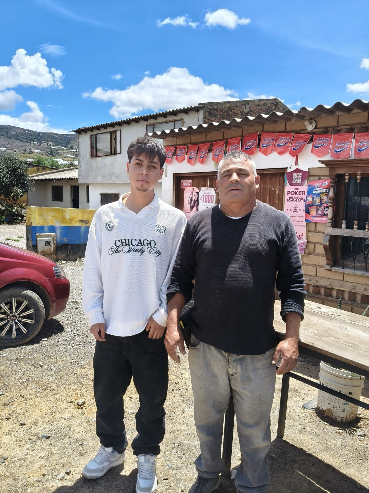
El día de hoy realizamos una entrevista al señor Alirio Humberto Rubio Sierra, de 59 años, residente de la vereda Arrayán y Canales, con el propósito de conocer cuál era la música que se escuchaba durante su infancia y juventud.
En la niñez escuchaba música mexicana, vallenata, “rucarrón” y “chiquichá”. Después llegó la música carranguera, la música norteña y, actualmente, el rock en español.
Desde la niñez, en Sáchica, Boyacá, en la vereda El Ritoque.
Por radio. En ese tiempo tenía un radio de marca Sany y también escuchaba música por radiola.
La Voz de Ricaurte, de Villa de Leyva, y Ondas del Porvenir, de Samacá, Boyacá.
Diomedes Díaz, “El Cacique”, y Vicente Fernández.
Por medio de discos y casetes.
En la tarde o en la mañana, porque por la noche a uno le daba sueño.
En las reuniones en las casas y en las fiestas patronales de Sáchica y Villa de Leyva se escuchaba, sobre todo, música carranguera, vallenata y mexicana.
Su cantante favorito era Diomedes Díaz y su canción favorita, “Tu Serenata”.
Sí. Hoy en día hay mucha más variedad de música.
“La mochila azul”, de Pedrito Fernández.
El testimonio de Alirio Humberto Rubio Sierra nos permite recordar cómo la radio, las radiolas, los discos y los casetes acompañaban la vida cotidiana y las fiestas de antes. Sus recuerdos conservan una parte de la memoria musical de la comunidad.
La señora María Teresa Ibáñez comparte coplas inspiradas en las costumbres, los sabores y el cariño por Sáchica.
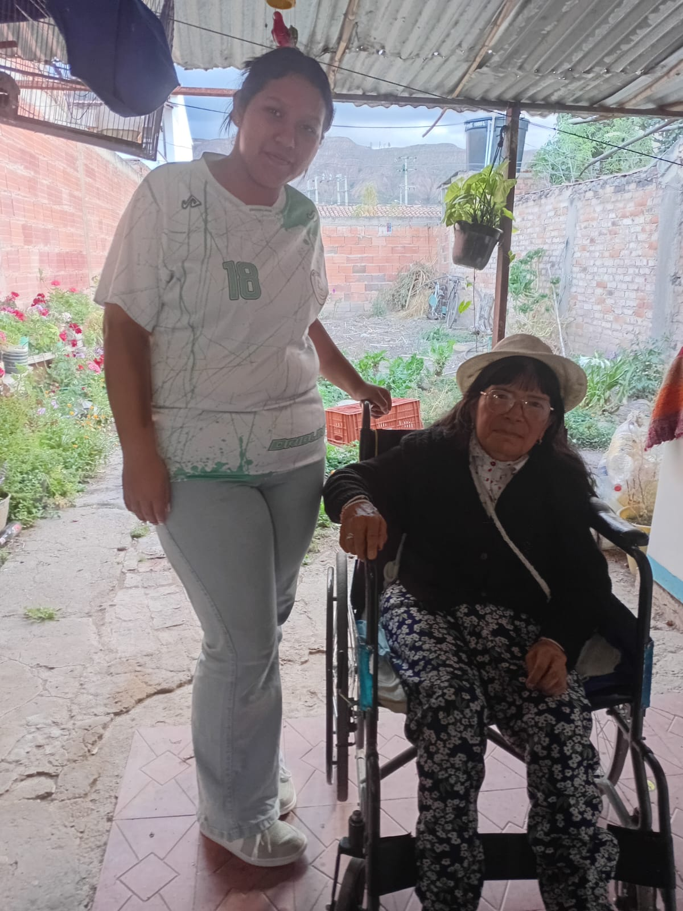
En este encuentro, la señora María Teresa nos comparte nueve coplas que resaltan la identidad de Sáchica, sus cultivos de cebolla y tomate, los olivos, la chicha, la gastronomía y las tradiciones de su gente.
Sáchica, tierra querida,
tierra de paz y de amor,
este bello paraíso
que hizo nuestro Señor.
Sáchica, tierra de olivos,
de cebollas y tomates,
de gente trabajadora
y echada para delante.
Chicha más deliciosa
se bate aquí en Boyacá;
si no me quiere creer,
venga a Sáchica y verá.
Al señor alcalde
lo queremos invitar,
que se tome un vaso de chicha
y que baje aquí a bailar.
Nosotros los sachiquenses
somos muy agradecidos,
porque es el único parque
con nuestras matas de olivo.
La chicha más deliciosa
se bate en olla de barro,
pero hay que tomar poquita
porque también hace daño.
La gallina más deliciosa
es de Sáchica, Boyacá;
si no me quiere creer,
venga a Sáchica y verá.
La danza de la chicha,
patrimonio inmaterial,
Sáchica le rinde homenaje
y hace un gran festival.
En Sáchica tengo el nombre,
en Samacá mi apellido,
y en la vereda Tintal
tengo un amor escondido.
Estas coplas conservan expresiones populares que celebran el orgullo de pertenecer a Sáchica y ayudan a transmitir sus costumbres de una generación a otra.
Historia, cultura y paisajes del municipio.


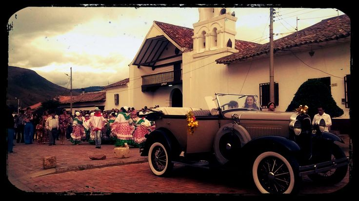


Descubre un territorio donde la historia, cultura, paisajes y gastronomía se unen.